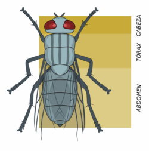

¿Qué son los animales invertebrados?
La mayoría de las especies animales son invertebrados; una estimación sitúa la cifra en el 97%. Muchos taxones invertebrados tienen un mayor número y diversidad de especies que todo el subfilo de Vertebrata. El tamaño de los invertebrados varía mucho, desde 50 μm (0.002 in) rotíferos, hasta el calamar colosal que mide unos 9 a 10m.
Origen
Historia
Características
El origen de los invertebrados se remonta a más de 600 millones de años, durante el Precámbrico tardío y el Período Cámbrico, cuando ocurrió una explosión de formas de vida conocida como la Explosión Cámbrica. En este evento, surgieron la mayoría de los filos animales actuales, incluidos casi todos los grupos de invertebrados.
Detalles del origen:
-
Evolucionaron a partir de organismos unicelulares que se volvieron multicelulares.
-
Los primeros invertebrados fueron marinos, como esponjas, medusas y gusanos.
-
A lo largo del tiempo, estos organismos desarrollaron estructuras más complejas, como sistemas nerviosos, exoesqueletos y órganos especializados.
-
Fósiles como los de la fauna de Ediacara y Burgess Shale muestran evidencia de sus primeras formas.
Lamarck es considerado el fundador de la «zoología de invertebrados». Lamarck se refirió a ellos como «animales sin vértebras» (en francés animaux sans vertèbres), es decir, sin columna vertebral. En la clasificación de Carlos Linneo los animales no vertebrados se repartían en Insecta (refiriéndose a los artrópodos) y Vermes (que incluía a los gusanos, moluscos y celentéreos).
En 1794, Lamarck subdividió a los que luego se denominó «invertebrados» en moluscos, insectos, gusanos, equinodermos y pólipos. En 1809, consideró ya diez clases: moluscos, cirrípedos, anélidos, cangrejos, arañas, insectos, gusanos, equinodermos, pólipos e infusorios. Entre 1815 y 1822 Lamarck publicó, en siete volúmenes, la «Historia natural de los animales invertebrados» (Histoire naturelle des animaux sans vertèbres), con descripciones de las especies entonces conocidas y que fue obra de referencia durante mucho tiempo. Aunque muchos de los nombres anteriores siguen utilizándose, sus definiciones y respectivos límites han cambiado.
No tienen columna vertebral:
Ni esqueleto interno óseo, a diferencia de los vertebrados. Cuerpos blandos: aunque muchos poseen estructuras externas duras como caparazones o exoesqueletos.Gran diversidad de formas y tamaños:
Desde microscópicos hasta varios metros de longitud.Reproducción sexual o asexual:
Según la especie; algunos pueden regenerar partes del cuerpo.Sistemas nerviosos
Simples o complejos, dependiendo del grupo.Viven:
En todos los hábitats, incluidos terrestres, acuáticos y aéreos.Grupos principales:
Artrópodos (insectos, arácnidos, crustáceos), moluscos, equinodermos, cnidarios, anélidos, entre otros.Anatomía
Sistema nervioso
Las neuronas difieren en los invertebrados de las células de los mamíferos. Las células de los invertebrados se disparan en respuesta a estímulos similares a los de los mamíferos, como traumatismos en los tejidos, altas temperaturas o cambios en el pH. El primer invertebrado en el que se identificó una célula neuronal fue la sanguijuela medicinal, Hirudo medicinalis.
Se ha descrito el aprendizaje y la memoria mediante nociceptores en la liebre de mar, Aplysia'. Las neuronas de los moluscos son capaces de detectar presiones crecientes y traumatismos tisulares. Se han identificado neuronas en una amplia gama de especies de invertebrados, incluidos anélidos, moluscos, nematodos y artrópodos.[
Sistema respiratorio
Un tipo de sistema respiratorio invertebrado es el sistema respiratorio abierto compuesto por espiráculos, tráqueas y traqueolas que tienen los artrópodos terrestres para transportar gases metabólico hacia y desde los tejidos. La distribución de los espiráculos puede variar mucho entre los muchos órdenes de insectos, pero en general cada segmento del cuerpo puede tener sólo un par de espiráculos, cada uno de los cuales conecta con un atrio y tiene detrás un tubo traqueal relativamente grande. Las tráqueas son invaginaciones del exoesqueleto cuticular que se ramifican (anastomosan) por todo el cuerpo con diámetros que van desde unos pocos micrómetros hasta 0,8 mm. Los tubos más pequeños, las traqueolas, penetran en las células y sirven como lugares de difusión de agua, oxígeno y dióxido de carbono. Los gases pueden ser conducidos a través del sistema respiratorio mediante ventilación activa o difusión pasiva. A diferencia de los vertebrados, los insectos no suelen transportar oxígeno en su hemolinfa.
Reproducción
Al igual que los vertebrados, la mayoría de los invertebrados se reproducen, al menos en parte, mediante reproducción sexual. Producen células reproductoras especializadas que se someten a meiosis para producir espermatozoide más pequeño y móvil o óvulo más grande y no móvil. Estos se fusionan para formar cigotos, que se desarrollan en nuevos individuos. Otros son capaces de reproducirse asexualmente o, en ocasiones, por ambos métodos.
La investigación extensiva con especies de invertebrados modelo como Drosophila melanogaster y Caenorhabditis elegans ha contribuido mucho a nuestra comprensión de la meiosis y la reproducción. Sin embargo, más allá de los pocos sistemas modelo, los modos de reproducción encontrados en invertebrados muestran una increíble diversidad. En un ejemplo extremo se estima que el 10% de las especies de ácaros orbátidos han persistido sin reproducción sexual y se han reproducido asexualmente durante más de 400 millones de años.
Uso del término
Macroinvertebrados
Ejemplos
En la práctica profesional de la zoología, y en su enseñanza, la distinción entre vertebrados e invertebrados sigue ocupando un lugar, siendo comunes los departamentos universitarios, revistas científicas o manuales de zoología dedicados a los invertebrados, aunque esto debe interpretarse como efecto de una tradición, y no como el reconocimiento de validez o utilidad científica al concepto. En el tratamiento académico de la diversidad de los invertebrados se ha seguido utilizando extensamente la distinción de dos categorías: los artrópodos y los no artrópodos. Pero el problema que presentan estos últimos es análogo al indicado más arriba para el concepto de “invertebrados”.

En el lenguaje de la ecología acuática, el término «macroinvertebrado» se utiliza tradicionalmente para referirse a los invertebrados de agua dulce, incluidos los insectos (sobre todo larvas y ninfas), crustáceos, anélidos, moluscos (caracoles acuáticos y bivalvos) y planarias (platelmintos) que habitan en cauces de ríos, charcas, lagos, etc. Históricamente, su abundancia y diversidad se han utilizado como indicadores (bioindicadores) de la salud del ecosistema y de la biodiversidad local. Son un componente imprescindible en la cadena alimenticia y la trasformación de la materia orgánica.
- Artrópodos: arácnidos, insectos, miriápodos, crustáceos.
- Anélidos: lombrices de tierra, sanguijuelas.
- Moluscos: almejas, calamares, pulpos, caracoles.
- Equinodermos: estrellas de mar y erizos de mar.
- Cnidarios: medusas, corales, pólipos.
- Poríferos: esponjas.
- Platelmintos: gusanos planos.
- Nemátodos: gusanos cilíndricos.